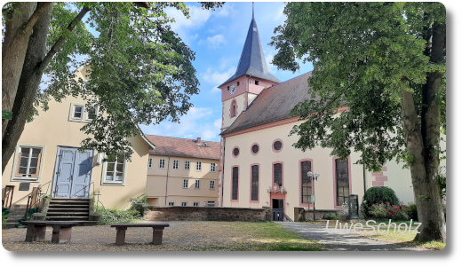
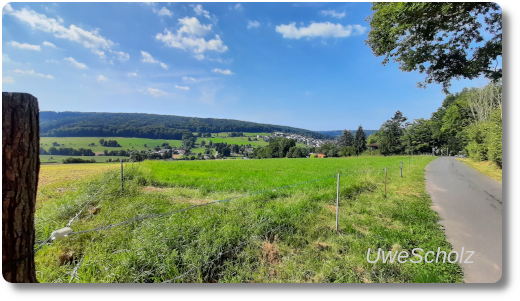
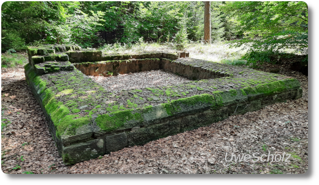

Odenwald-Wanderung am Limes
Diesen Sommer waren wir schon zweimal wandern. Ende Juli waren wir bei Michelstadt im Odenwald und vor ein paar Tagen, Mitte August, waren wir in und um Bad König unterwegs. Diese Wanderung war toll, weil das Wetter geradezu perfekt fürs Laufen durch Wald und auf Feldwegen war. Nach der Fahrt mit dem Zug von Langen bis nach Bad König haben wir uns vor dem Start noch mit zwei Stück Kuchen vom Bäcker eingedeckt. Und dann ging es los.

Bevor wir aus der Stadt heraus kamen, besuchten wir aber noch kurz die Evangelische Kirche. Hier kamen wir nicht rein, weil gerade ein Gottesdienst stattfand. Wegen der Corona-Pandemie waren auch vor der Kirche Stühle aufgestellt und mit Lautsprechern wurde die Predigt nach draußen übertragen. Die Stühle kann man im Bild unten nicht sehen, weil der Kirchplatz hinter der Steinmauer etwa 3 Meter tiefer liegt.
Aus der Stadt heraus ging es relativ schnell bergan und schon bald erreichten wir abgeerntete Felder außerhalb von Bad König. Ein Blick zurück verwöhnte mit diesem Anblick:
Was wir hier noch nicht wussten war, dass wir in 6 Stunden bei den Häusern auf der anderen Seite des Tals ankommen werden. :)
Etwa nach der Hälfte des Weges, auf der Karte oben bei den Windrädern, kamen wir auf dem Limes-Wanderweg an. Ab hier wandelt man auf den Spuren der Römer, und deren Spuren sind zum Beispiel durch Überbleibsel von alten Wachtürmen in der Landschaft zu erkennen. Eigentlich sind die etwa 2000 Jahre alten Reste nur noch durch Erdhügel zu erkennen, die von einem Ring aus Erde umgeben sind. Aber 1986 fand eine Rekonstruktion von mehreren Wachturm-Fundamenten statt. Eins kann man hier sehen:
Total interessant. Es gibt auch ein paar Informationstafeln zu den Türmen, die man unbedingt lesen sollte, um mehr über ihre Geschichte zu erfahren. Und vor diesem rekonstruiertem Turm konnten wir in Ruhe unseren Kuchen naschen, weil hier netterweise auch eine Holzbank steht.
Das Bild vom Streckenverlauf habe ich über die Seite https://www.j-berkemeier.de/ShowGPX.html erstellt, das Kartenmaterial stammt von OpenTopoMap.